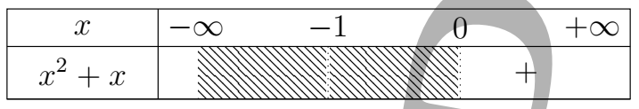
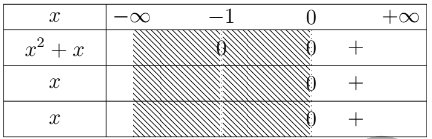
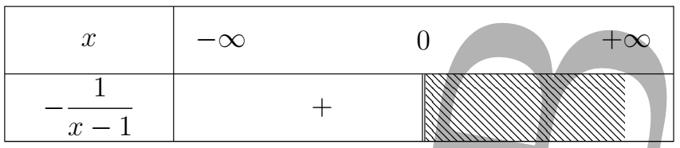
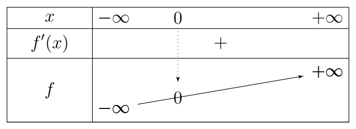
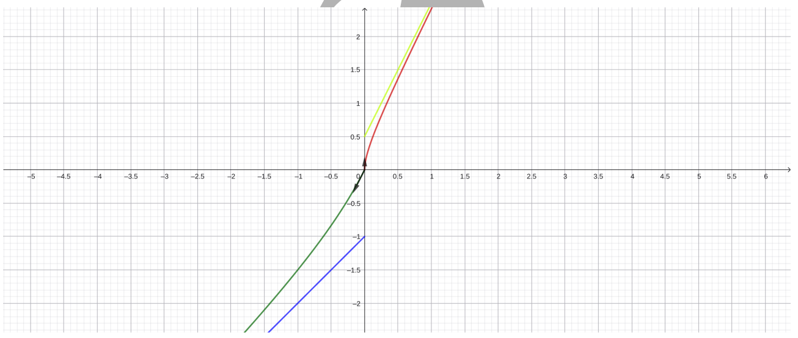
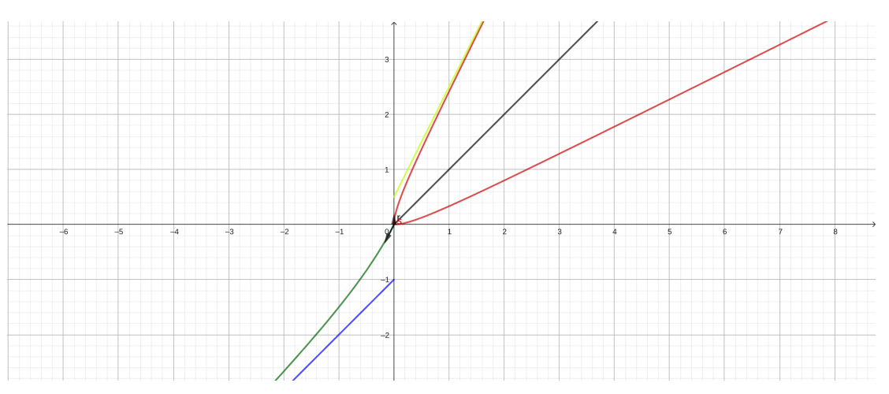

Théorème des valeurs intermédiaires (TVI).
Soit \(f\) une fonction continue sur l'intervalle \([a,b]\).
Pour tout réel \(k\) compris entre \(f(a)\) et \(f(b)\), il existe \(c \in [a,b]\) tel que
Corollaire.
L'image d'un intervalle par une fonction continue est un intervalle.
En particulier, si \(f(a)f(b) < 0\), alors \(f\) admet au moins une solution de l'équation \(f(x)=0\) dans \([a,b]\).
Théorème de la bijection.
Si \(f\) est continue et strictement monotone sur un intervalle \(I\), alors :
Théorème des accroissements finis (TAF).
Si \(f\) est continue sur \([a,b]\) et dérivable sur \(]a,b[\), alors il existe \(c \in ]a,b[\) tel que :
Inégalité des accroissements finis (IAF).
Si de plus \(|f'(x)| \le M\) pour tout \(x \in ]a,b[\), alors :
(Rappel) Théorème de la bijection.
Même énoncé que dans la question 2.
alors \(f\) est dérivable en \(x_0\) et :
En particulier, \(f\) est localement strictement monotone en \(x_0\) et \(x_0\) n'est pas un extremum.
alors la dérivée à gauche de \(f\) en \(x_0\) est \(+\infty\).
La pente est verticale du côté gauche (pas de dérivée finie).
alors \(f\) est dérivable en \(x_0\) et :
La tangente en \(x_0\) est horizontale.
Si
alors la droite d'équation \(y = \beta x + b\) n'est pas une asymptote oblique pour \(f\).
L'écart entre \(f(x)\) et \(\beta x\) diverge vers \(+\infty\).
Si \(f\) est continue et strictement décroissante sur \(]-\infty, b]\), alors :
où \(\ell = \lim_{x \to -\infty} f(x)\).
L'intervalle est ouvert à gauche car \(-\infty\) n'est pas un réel.
Calculons les limites suivantes : (3 × 1 pt)
1.
2.
3.
4.
Donnons les primitives des fonctions \(f\), \(g\) et \(h\) respectivement sur \(\mathbb{R}\) et \(\mathbb{R} \setminus \{1; 2\}\). (3 × 0,5 pt)
f. \(f(x) = 2\cos(x) - 3\sin(x)\)
g. \(g(x) = (3x-1)(3x^2-2x+3)^3\)
h. \(h(x) = \dfrac{1-x^2}{(x^3-3x+2)^3}\)
Soit la fonction \(f\) définie par :
Déterminons l'ensemble de définition \(\mathcal{D}_f\) de \(f\). (0,5 pt)
Posons \(f(x) = \begin{cases} f_1(x) & \text{si } x < 0, \\ f_2(x) & \text{si } x \ge 0. \end{cases}\)
\(f_1\) existe ssi \(x - 1 \neq 0\) et \(x < 0\)
\(x - 1 \neq 0 \implies x \neq 1\) et \(x < 0\)
\(Df_1 = ]-\infty ; 0[\)
\(f_2\) existe ssi \(x^2 + x \ge 0\) et \(x \ge 0\)
\(x^2 + x = 0 \implies x = 0\) ou \(x = -1\)

\(Df_2 = [0 ; +\infty[\)
Donc
Déterminons les limites aux bornes de \(\mathcal{D}_f\). (0,5 pt)
En \(-\infty\) : \(f(x) = f_1(x)\)
\(\lim\limits_{x \to -\infty} f(x) = -\infty\) (0,25 pt)
En \(+\infty\) : \(f(x) = f_2(x)\)
\(\lim\limits_{x \to +\infty} f(x) = +\infty\) (0,25 pt)
Étudions la continuité et la dérivabilité de \(f\) en \(0\). Interprétons les résultats obtenus. (1,5 pt)
Étudions la continuité de \(f\) en \(0\)
En \(0^-\) : \(f(x) = f_1(x)\)
\(\lim\limits_{x \to 0^-} f(x) = 0\)
En \(0^+\) : \(f(x) = f_2(x)\)
\(\lim\limits_{x \to 0^+} f(x) = 0\)
On a \(f(0) = 0\)
Finalement \(\lim\limits_{x \to 0^-} f(x) = \lim\limits_{x \to 0^+} f(x) = f(0)\) donc \(f\) est continue en \(0\)
Étudions la dérivabilité de \(f\) en \(0\)
En \(0^-\) : \(f(x) = f_1(x)\)
\(f\) est dérivable à gauche de \(0\) et \(y = 2x\) est une demi-tangente en \(0^-\)
En \(0^+\) : \(f(x) = f_2(x)\)
Supposons que $ x - \sqrt{x^2+x} > 0 $
$ x - \sqrt{x^2+x} > 0 \implies \sqrt{x^2+x} < x $
$ \begin{aligned} \sqrt{x^2+x} < x &\implies \begin{cases} x^2+x> 0\\ x > 0\\ x^2+x < x^{2} \end{cases}\\ &\implies \begin{cases} x^2+x> 0\\ x > 0\\ x < 0 \end{cases}\\ \end{aligned} $
$ \begin{aligned} \begin{cases} x^2+x=0\\ x=0 \end{cases}\implies \begin{cases} x=0 \textbf{ ou } x=-1\\ x=0 \end{cases} \end{aligned} $

$$ S = \emptyset $$ Ainsi, il n'existe pas de $ x > 0 $ pour lequel $ x-\sqrt{x^2+x} > 0 $
$$ \textbf{Donc } x-\sqrt{x^2+x} <0, \, \forall x\in ]0;+\infty[ $$
Ainsi $\forall x\in ]0;+\infty[$ $f'(x) > 0 $ donc f est croissant $0;+\infty[$
\( \begin{aligned} \lim\limits_{x \to 0^+} \dfrac{f(x)-f(0)}{x} &=\lim\limits_{x \to 0^+} \dfrac{-1}{(x - \sqrt{x^2+x})}\\ &=\dfrac{-1}{0^-}\\ &=+\infty \\ \end{aligned} \)
$f$ n'est pas dérivable à droite de $0$ donc admet une démi-tangent orientée vers le haut en $0^+$
Montrons que \((\mathcal{C}_f)\) admet en \(-\infty\) une asymptote oblique \(\Delta_1\) dont on déterminera l'équation. (0,5 pt)
Comme \( \lim\limits_{x \to -\infty} f(x) = -\infty \)
Cherchons \( \lim\limits_{x \to -\infty} \dfrac{f(x)}{x} \)
Donc \( \lim\limits_{x \to -\infty} \dfrac{f(x)}{x} = 1 \)
Cherchons \( \lim\limits_{x \to -\infty} f(x)-x \)
Donc \((\Delta_1) : y = x - 1\) est une asymptote oblique à \((\mathcal{C}_f)\) en \(-\infty\)
Étudions la position relative de \((\mathcal{C}_f)\) par rapport à \(\Delta_1\) sur \(]-\infty; 0[\). (0,5 pt)
Étudions le signe de \(f(x) - y\)

Sur \(]-\infty; 0[\), \(f(x) - y > 0\) donc \((\mathcal{C}_f)\) est au-dessus de \((\Delta_1)\)
Montrons que \((\mathcal{C}_f)\) admet en \(+\infty\) une asymptote oblique \(\Delta_2\) dont on déterminera l'équation. (0,5 pt)
Comme \(\lim\limits_{x \to +\infty} f(x) = +\infty\)
Cherchons \(\lim\limits_{x \to +\infty} \frac{f(x)}{x}\)
Donc \(\lim\limits_{x \to +\infty} \frac{f(x)}{x} = 2\)
Cherchons \(\lim\limits_{x \to +\infty} f(x) - 2x\)
Donc \((\Delta_2) : y = 2x + \frac{1}{2}\) est une asymptote oblique à \((\mathcal{C}_f)\) en \(+\infty\)
Précisons l'ensemble de dérivabilité de \(f\) puis calculons \(f'(x)\) sur chaque intervalle où \(f\) est dérivable. (0,5 pt)
\(Df' = \mathbb{R}^*\)
\[ f(x)= \begin{cases} \dfrac{x^2-2x}{x-1} & \text{si } x<0,\\[4mm] x + \sqrt{x^2+x} & \text{si } x\ge 0, \end{cases} \qquad \text{et } (\mathcal{C}_f) \text{ sa courbe représentative dans} \text{ un repère orthonormé } (O,\vec{i},\vec{j}). \]
\[ \begin{aligned} f'(x)=\begin{cases} \dfrac{(2x-2)(x-1)-(x^2-2x)}{(x-1)^{2}} & \text{si } x<0,\\[4mm] 1 + \dfrac{2x+1}{2\sqrt{x^2+x}} & \text{si } x> 0, \end{cases}&\implies \begin{cases} \dfrac{2x^2-2x-2x+2-x^2+2x}{(x-1)^{2}} & \text{si } x<0,\\[4mm] \dfrac{2\sqrt{x^2+x}+2x+1}{2\sqrt{x^2+x}} & \text{si } x> 0, \end{cases}\\ &\implies \begin{cases} \dfrac{x^2-2x+2}{(x-1)^{2}} & \text{si } x<0,\\[4mm] \dfrac{2\sqrt{x^2+x}+2x+1}{2\sqrt{x^2+x}} & \text{si } x> 0, \end{cases} \end{aligned} \]
Dressons le tableau de variation de \(f\). (0,5 pt)
Si \(x < 0\), \(f'(x)=\dfrac{x^2-2x+2}{(x-1)^2}\). Le signe dépend du numérateur.
\(x^2-2x+2 = 0 \implies \Delta < 0\)
Ainsi, si \(x < 0\), \(f'(x)> 0\) donc \(f\) est croissante sur \(]-\infty; 0[\)
Si \(x > 0\), \(f'(x) = \dfrac{2\sqrt{x^2+x}+2x+1}{2\sqrt{x^2+x}}\). Le signe dépend du numérateur.
Or \(2\sqrt{x^2+x}+2x+1 > 0\) pour tout \(x \in ]0; +\infty[\)
Ainsi, pour tout \(x \in ]0; +\infty[\), \(f'(x) > 0\) donc \(f\) est croissante sur \(]0; +\infty[\)

Précisons les points d'intersection de \((\mathcal{C}_f)\) avec les axes du repère. (0,25 pt)
Pour \(x < 0\), \(f(x)=\dfrac{x^2-2x}{x-1}\)
Pour \(x \ge 0\), \(f(x) = x + \sqrt{x^2+x}\)
Donc la solution est \(0\)
Construire la courbe \((\mathcal{C}_f)\). (1,5 pt)
📈 Courbe de la fonction f
Courbe représentative de \(f\) avec les asymptotes \(\Delta_1: y = x - 1\) et \(\Delta_2: y = 2x + \frac{1}{2}\)
👉 Clique ici pour voir la courbe sur Geogebra

Soit \(h\) la restriction de \(f\) à l'intervalle \(I = [0; +\infty[\).
Montrons que \(h\) réalise une bijection de \(I\) dans un intervalle \(J\) que l'on précisera. (0,25 pt)
Sur \(I\), \(h\) est continue et strictement croissante donc réalise une bijection de \(I\) vers
La bijection réciproque \(h^{-1}\) est-elle dérivable sur \(J\) ? (0,25 pt)
Comme \(\forall x \in I\), \(h'(x) \neq 0\) donc \(h^{-1}\) est dérivable sur \(J\).
Calculons \(h\left(\frac{4}{5}\right)\) puis \((h^{-1})'(2)\). (0,5 pt)
Calcul de \(h\left(\frac{4}{5}\right)\) :
Calcul de \((h^{-1})'(2)\) :
$(h^{-1})'(2) = \dfrac{1}{h'\left(\frac{4}{5}\right)}$
Or $h'(x)=\dfrac{1}{\dfrac{2\sqrt{x^2+x}+2x+1}{2\sqrt{x^2+x}}}$ donc $h'(2)=\dfrac{1}{\dfrac{2\sqrt{\left(\frac{4}{5}\right)^2+\left(\frac{4}{5}\right)}+2\left(\frac{4}{5}\right)+1}{2\sqrt{\left(\frac{4}{5}\right)^2+\left(\frac{4}{5}\right)}}}$
\( \begin{aligned} (h^{-1})'(2) &= \dfrac{1}{h'\!\left(\frac{4}{5}\right)}\\[0.2cm] &=\dfrac{1}{\dfrac{2\sqrt{\left(\frac{4}{5}\right)^2+\left(\frac{4}{5}\right)}+2\left(\frac{4}{5}\right)+1}{2\sqrt{\left(\frac{4}{5}\right)^2+\left(\frac{4}{5}\right)}}}\\[0.2cm] &=\dfrac{2\sqrt{\left(\frac{4}{5}\right)^2+\left(\frac{4}{5}\right)}} {2\sqrt{\left(\frac{4}{5}\right)^2+\left(\frac{4}{5}\right)}+2\left(\frac{4}{5}\right)+1}\\[0.2cm] &=\dfrac{2\cdot \frac{6}{5}}{2\cdot \frac{6}{5} + \frac{8}{5} + 1}\\[0.2cm] &=\dfrac{\frac{12}{5}}{\frac{12}{5}+\frac{8}{5}+\frac{5}{5}}\\[0.2cm] &=\dfrac{\frac{12}{5}}{\frac{25}{5}}\\[0.2cm] &=\dfrac{12}{25} \end{aligned} \)
Construction de \((\mathcal{C}_{h^{-1}})\) la courbe représentative de \(h^{-1}\) dans le même repère. (0,5 pt)
📈 Courbe de \(h^{-1}\)
Courbe représentative de la bijection réciproque
👉 Clique ici pour voir la courbe sur Geogebra

Exprimons \(h^{-1}(x)\) pour tout \(x \in J\). (0,5 pt)
Soit \(y = h(x) = x + \sqrt{x^2+x}\).
On isole la racine : \(y - x = \sqrt{x^2+x}\).
En élevant au carré : \((y-x)^2 = x^2+x\).
\(y^2 - 2xy + x^2 = x^2 + x\).
En simplifiant : \(y^2 - 2xy = x\).
On factorise par \(x\) : \(y^2 = x(1+2y)\).
D'où :